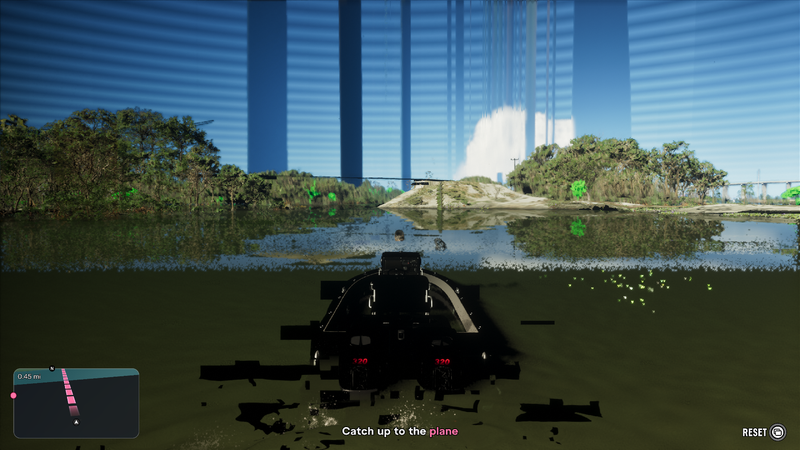

同一检查点上，快艇乘客的身形显现了
G20，03:12:16 UTC。乘客出现在船上右侧。此前的 G19 画面中，这一位置只有一小片暗色图形。两图显示相同任务目标和 0.45 英里路线，光照和水面的异常仍然存在。 对照两次快艇画面 →


玩家在营地捡起一把羊角锤，又换成了长柄大锤。尝试开门并短暂奔跑后，游戏把“想办法进入木屋”换成了“救出唐尼”。这期间没有再跳过检查点，营救本身尚未完成。
上图是同一快艇检查点。此前看似空着的座位上，如今能看到乘客的头部、上衣和四肢。另一段过场对话中也重新绘出了脸和双肩。在一组同条件河面测试中，实际显示帧率从 4.358 升至 5.454。满油门之后，路线仍标示 0.45 英里。
查看任务地图和对白 →G20，03:12:16 UTC。乘客出现在船上右侧。此前的 G19 画面中，这一位置只有一小片暗色图形。两图显示相同任务目标和 0.45 英里路线，光照和水面的异常仍然存在。 对照两次快艇画面 →
“Gone Fishing”任务地图上仍显示“Save Donnie”（救出唐尼）。随后在游戏的任务记录里可以看到唐尼向杰森呼救，以及寻找掩体的教程提示。两张菜单截图清楚保留了游戏原有的目标和对白，营救尚未完成。 查看任务地图和对白 →
G20 显示了两个绿色载具图标和“跟随飞机”目标。在绿灯画面后 5.563 秒，也就是游戏读到满油门后 4.831 秒，第一次在截图中看到发动机警告。最终任务再次报告“卡尔掉下了船”。
G19 中几乎只能看到头发、眉毛和睫毛。同一段对话、略有不同的姿势下，G20 绘出了脸部、脖颈和双肩。此前游戏实际运行了三个修正后的角色剔除着色器。两张图可见模型表面重新出现，光照仍然过暗，大多数面部细节难以辨认。第四个着色器仅在游戏外测过。 对照两张特写 →
装备长柄大锤后，玩家尝试了铰链门，向前移动并转动镜头。游戏把“想办法进入木屋”换成了“救出唐尼”。这期间没有再跳过检查点，具体哪一步触发了推进仍不清楚。界面确认的是新目标，尚未看到唐尼获救。 查看新任务目标 →
以下为各项工作的分工和最近确认时间，均为 UTC。
正在跟进 G20 的角色渲染实测和仍未通过的快艇任务。
已在地图确认营救目标，并在任务记录里核对了唐尼的呼救。营救仍在进行。
已核对 G19 与 G20 的同一快艇检查点。在此前发动机受损后，复测画面中船上右侧的乘客重新出现。
已将 92 项水面输出和 150 个遮挡查询数据字与 G16 的 GPU 实测结果逐一对比，全部一致。
已确认在测试的两种网格尺寸下，原版水面高度查询都会读取两份模拟输出。
对比了任务实际用到的 140 个计算着色器。两个版本都成功创建了 134 条管线，实机画面效果还有待测量。
已为两个语言版本核对任务菜单、对白、角色特写和河面帧时间记录。
已交付部分页面复制优化和流式纹理改动。在一次混合负载回放中，速度提高到原来的 1.92 倍，输出一致。13 项纹理及资源归属检查全部通过。
每 30 分钟查看相关项目的改动。已定位 180 次光照绘制共用的输入。
每小时检查其他实现。最近一次对比表明，目前适合继续使用 VIctory。
已完成内存边界复核和四项 CPU 检查，下一次包内容变更后再复核。